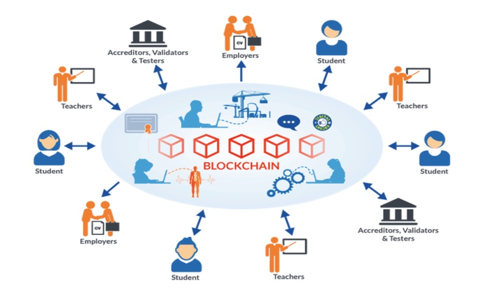
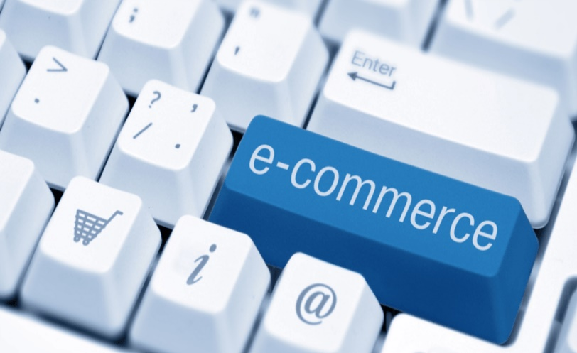
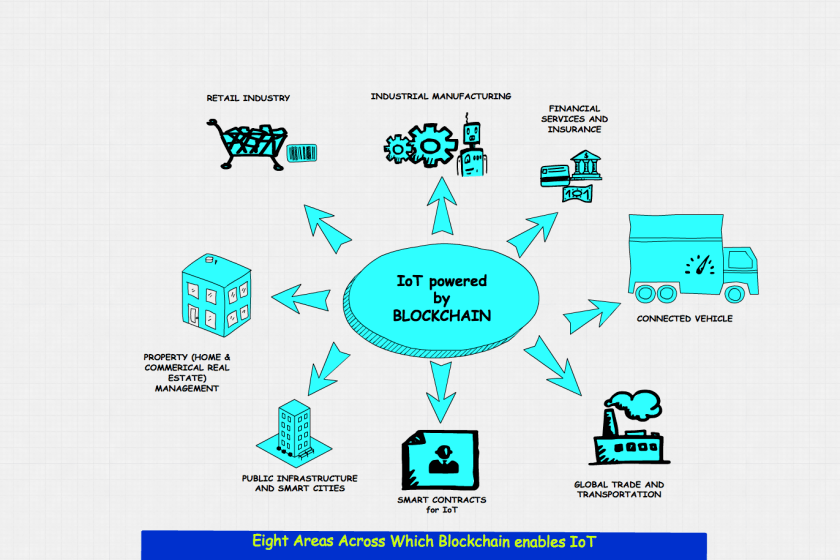
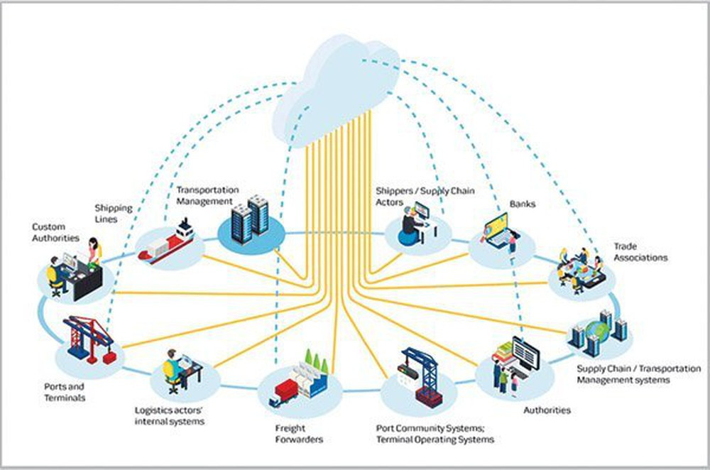

ỨNG DỤNG CỦA BLOCKCHAIN TRONG THỰC TẾ
MỤC LỤC
AN NINH
Y TẾ
GIÁO DỤC
THƯƠNG MẠI ĐIỆN TỬ
Logistics
IOT-Internet of things
DỊCH VỤ TÀI CHÍNH
GIAO THÔNG VẬN TẢI
GIẢI TRÍ
NHỮNG ỨNG DỤNG KHÁC
TRONG CÁC CÔNG TY CÔNG NGHỆ
Blockchain Bảo mật dữ liệu tuyệt đối. Nhờ vào công nghệ chuỗi khối blockchain, mỗi giao dịch là một “block”, mỗi block đều có vai trò như nhau, Dữ liệu không tập trung vào một máy chủ nào cả, không thể xóa bỏ hoặc rất khó thay đổi. Với việc lưu trữ thông tin truyền thống, chỉ cẩn đánh vào 1 máy chủ thì toàn bộ hệ thống sẽ bị tê liệt. Để có thể đánh sập mạng lưới blockchain, tin tặc cần đánh sập tất cả các "block" trên hệ thống cùng một lúc. Và điều này là không thể.

Một trong những lĩnh vực được Blockchain cải tiến nhiều nhất là y tế. Ngành công nghiệp chăm sóc sức khỏe này được tin rằng sẽ cải thiện mọi thứ, từ lưu trữ hồ sơ bệnh nhân đến theo dõi chuỗi cung ứng. Mọi quá trình khám bệnh và xét nghiệm của bệnh nhân đều được lưu trữ trong công nghệ Blockchain, đảm bảo tính bảo mật và tính chính xác tối đa. Và dù cho người bệnh có nhu cầu chuyển viện đến bất kỳ đâu, chỉ cần truy xuất thông tin, mọi dữ liệu đều sẽ được đồng bộ trên bất kỳ ngôn ngữ hay loại phần mềm khác.
Điều này không những giảm thiểu tối đa chi phí cho người bệnh mà còn đảm bảo quá trình theo dõi bênh án một cách chính xác nhất.

Quá trình thẩm định chứng chỉ, hồ sơ là một vấn đề vô cùng phức tạp đối với nhiều quốc gia trên thế giới. Các vấn nạn gian lận làm giả dữ liệu lúc này đang trở nên phổ biến hơn bao giờ hết. Công nghệ Blockchain sẽ góp phần minh bạch hóa hồ sơ học viên, giúp nhà tuyển dụng dễ dàng truy xuất nguồn gốc hồ sơ để kiếm tra quá trình học tập của các ứng viên từ thấp đến cao.
Nhiều trường đại học trên thế giới đã bắt đầu triển khai công nghệ blockchain để theo dõi và lưu trữ bảng điểm và bằng cấp của sinh viên và thông tin của các đơn vị đào tạo. Ví dụ có thể kể tới là dự án “Blockcerts” do Phòng nghiên cứu truyền thông MIT thuộc Viện Công nghệ Massachusetts, Hoa Kỳ phát triển vào năm 2017; Blockcerts cung cấp bằng chứng nhận cho các học viên hoàn thành một số chương trình của MIT dưới dạng số hóa trên nền bảo mật của blockchain
Xu hướng thị trường hiện nay đang dần dần chuyển sang dịch vụ trực tuyến. Thương mại điện tử cũng không ngoại lệ. Tuy nhiên, những thách thức mà ngành công nghiệp này phải đối mặt là hệ thống xử lý dữ liệu phải tối ưu nhất để có thể xử lý thông tin nhanh chóng và chính xác. Phát minh về hợp đồng thông minh (Smart Contract) chính là giải pháp hiệu quả nhất. Từ đây, giải pháp thanh toán giúp việc kinh doanh trở nên dễ dàng nhờ việc hợp tác với nhiều doanh nghiệp nội và ngoại trong thời gian ngắn với thủ tục đơn giản hơn rất nhiều.
Trong lĩnh vực cung ứng và vận chuyển, blockchain có thể được hiểu như một cuốn sổ lớn để mọi người cùng dùng, lưu trữ tất cả các thông tin về hàng hoá, từ khi còn là sản phẩm thô cho đến khi tới tay người tiêu dùng. Nhiều công ty lớn trên thế giới như Walmarts, Co-op đang dần sử dụng công nghệ này để tối ưu hoá chuỗi cung ứng.
De Beers – công ty chuyên về khai thác, giao dịch và buôn bán kim cương đá quý đã sử dụng blockchain như ghi lại hành trình của kim cương, từ khi còn ở trong mỏ khai thác tới lúc đến tay người mua. Nhờ sự minh bạch này, khách hàng luôn có thể tra xuất, xác minh nguồn gốc của kim cương mà không cần đi qua các công đoạn phức tạp.

Công nghệ blockchain cho phép chúng ta xác định các thiết bị thông minh thông qua các thông tin liên quan và lập trình chúng để phản ứng với các tính huống định sẵn mà không có nguy cơ lỗi, giải mạo, thiếu tính an toàn. Vì khi IoT ứng dụng công nghệ blockchain sẽ tạo ra một cuốn sổ cái IoT, với đặc tính: phi tập trung, đáng tin, bảo mật việc chia sẻ thông tin, cảm biến, tự động tương tác và giao dịch khắp Internet. Hiện nay có rất nhiều công ty và tập đoàn lớn đang xây dựng mạng lưới Blockchain cho riêng mình. Vì thế chúng ta sẽ sớm thấy điều này có thể tạo ra một làn sóng cho tương lai được ứng dụng ở rất nhiều các lĩnh vực ngành nghề khác nhau.
-Theo khảo sát của Accenture, hơn một nửa các nhà quản lý hàng đầu hiện nay cho rằng blockchain đóng một vai trò quan trọng trong sự thành công của các ngân hàng cũng như công ty tài chính.
-Một trong những ứng dụng quan trọng của blockchain trong lĩnh vực tài chính là giúp nhận diện khách hàng dựa trên số cái phân tán. Blockchain cũng có thể ứng dụng trong nhiều hoạt động như tín dụng cho vay, gây quỹ, gọi vốn, mua bán tài sản, chuyển tiền ngang hàng…
-Securrency là nền tảng giao dịch tiền mã hóa và một vài loại tài sản, trao đổi thông qua token của Securrency. Đây là ứng dụng cho phép các loại tiền thuật toán được giao dịch bên ngoài các giao dịch chuyên dụng của chúng.
-Ứng dụng blockchain vào giao thông sẽ giúp người dùng có thể gọi một phương tiện tự động để đưa người dùng tới nơi cần đến một cách an toàn. Phương tiện này sẽ chọn tuyến đường nhanh nhất, tránh công trường xây dựng, nộp phí cầu đường. Trong trường hợp giao thông tắc nghẽn, phương tiện sẽ thỏa thuận một mức giá vượt đường để đảm bảo người dùng có mặt tại điểm đến dúng giờ. Các nhà quản lý vận tải sẽ áp dụng IoT được vận hành trên blockchain đối với tát cả các kiện hàng để thông quan hoặc kiểm tra yêu cầu khác một cách nhanh chóng.
Công nghệ Blockchain xuất hiện như giải pháp giúp ngành vận tải biển đạt được 2 mục đích: sự minh bạch và loại bỏ các thủ tục giấy tờ rườm rà. Thứ nhất là ứng dụng công nghệ Blockchain để quản lý và theo dõi việc vận chuyển hàng hóa trên toàn cầu, trong một hệ thống minh bạch và không thể sửa đổi; Thứ hai là ứng dụng hợp đồng thông minh (smart contract) để thay thế cho các thủ tục giấy tờ phức tạp, đẩy nhanh tiến độ vận chuyển hàng hóa.
-Một trong những ứng dụng nghe nhạc phổ biến nhất thế giới hiện nay là Spotify đang dần từng bước ứng dụng blockchain vào dịch vụ của mình. Năm 2017, công ty này đã mua lại một startup về blockchain là Medichain Labs hướng tới phát triển các giải pháp công nghệ, kết nối nghệ sĩ với các đơn vị bản quyển để cấp phép cho các ca khúc phát hành trên Spotify.
-Trong lĩnh vực trò chơi trực tuyến, B2expand là công ty đầu tiên sử dụng công nghệ blockchain cho việc phát hành các trò chơi điện tử đối kháng dựa trên nền tảng Ethereum.
-Một ứng dụng trong lĩnh vực giải trí khác cũng ứng dụng blockchain thành công là Guts, hệ sinh thái bán vé minh bạch nhằm loại bỏ thị trường bán vé chợ đen.
-Blockchain có thể được ứng dụng để đơn giản và minh bạch hoá quá trình stream nhạc của các nghệ sĩ trên các nền tảng nghe nhạc trực tuyến.
- Ứng dụng trong sản xuất các phương tiện giao thông: theo dõi trung thực, lịch sử đầy đủ của chiếc xe từ khâu chuẩn bị sản xuất đến bán ra; quản lý chuỗi cung ứng vật tư, thiết bị và bán hàng.
- Ứng dụng trong hoạt động từ thiện: theo dõi việc phân bổ các khoản đóng góp, trách nhiệm giải trình, tính toàn vẹn; giảm chi phí và độ phức tạp của việc xử lý thanh toán đóng góp.
- Ứng dụng trong lĩnh vực an ninh mạng: chống việc tấn công, thay đổi dữ liệu sổ cái; bảo đảm tính hợp lệ, toàn vẹn của dữ liệu; loại bỏ điểm lỗi duy nhất (giảm thiểu tấn công DdoS dựa trên IP).
- Ứng dụng trong bầu cử: giảm thiểu khả năng gian lận trong bầu cử bằng các cách kiểm chứng số liệu dựa trên tính chất liên kết của blockchain; số hóa hầu hết các quy trình bầu cử; tăng trách nhiệm giải trình và tuân thủ; xác thực danh tính; tính toàn vẹn của dữ liệu đăng ký công dân.
- Ứng dụng trong quản lý nhân sự: xác minh danh tính, lịch sử việc làm; xác thực thanh toán tiền lương và các khoản phụ cấp - hợp đồng thông minh.
- Ứng dụng trong thi hành pháp luật: tính toàn vẹn của bằng chứng, chống giả mạo dữ liệu vụ án; tài liệu về chuỗi sự kiện có dấu thời gian, đóng dấu thời gian.
- Ứng dụng trong du lịch: xác định thông tin và hoạt động của hành khách: lên máy bay, hộ chiếu, thanh toán,… chương trình khách hàng thân thiết.
-
MICROSOFT: Khách hàng của Microsoft Azure Enterprise có thể truy cập Ethereum Blockchain dưới dạng Dịch vụ . Điều này cung cấp cho các doanh nghiệp quyền truy cập vào các hợp đồng thông minh và các ứng dụng blockchain trong một môi trường được lưu trữ an toàn
GOOGLE: Google cũng được báo cáo là đang làm việc trên một blockchain độc quyền để hỗ trợ doanh nghiệp dựa trên đám mây của mình. Công ty mẹ Alphabet đang phát triển một sổ cái phân tán mà các bên thứ ba sẽ có thể sử dụng để lưu trữ dữ liệu, được cho là liên quan đến các dịch vụ đám mây của Google dành cho doanh nghiệp, với phiên bản nhãn trắng cho các công ty cũng đang hoạt động.
FACEBOOK:18/6/2019 Facebook sau khi công bố đồng tiền ảo Libra thì cũng đồng thời công bố nhiều tài liệu quan trọng liên quan tới thiết kế của đồng tiền “có sử dụng blockchain” này. Đây có vẻ là một đồng tiền được thiết kế tốt nhất hiện nay dựa trên tài liệu White Paper mà Facebook vừa cung cấp. Hoạt động của Facebook Libra sẽ như một ngân hàng trung ương, đưa ra các chính sách tiền tệ để kiểm soát giá trị đồng tiền Libra đối với các đồng tiền “ngoại tệ” khác. Ví Calibra mọi người có thể vào đăng ký từ bây giờ nhưng Libra và hệ sinh thái sẽ chính thức launch toàn cầu vào trong khoảng đầu năm 2020.
-TEAM 74LS193-
Tài liệutham khảo
https://en.wikipedia.org/wiki/Blockchain